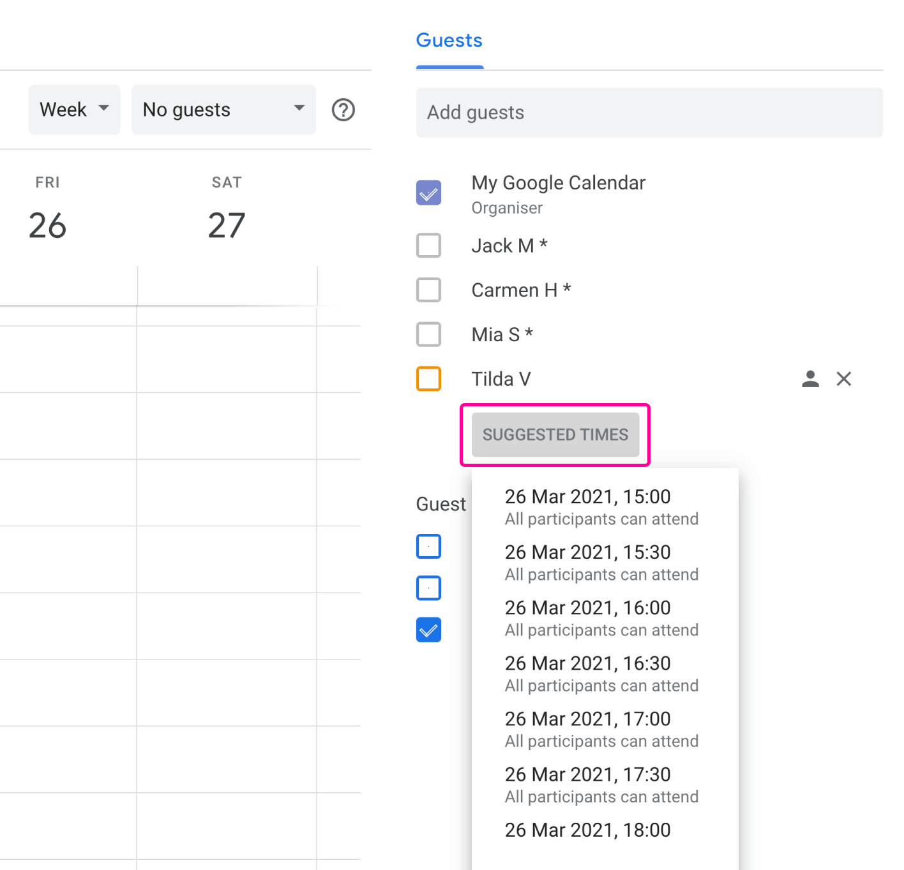
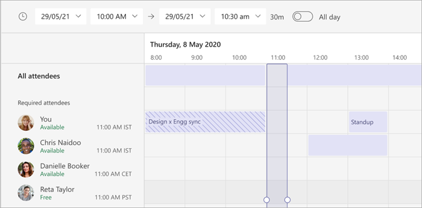

캘린더 겹쳐보기 개선
가장 먼저 떠오른 방향이었어요. 익숙하고, 이미 구글 캘린더와 팀즈에 있으니까요. 하지만 겹쳐보기는 캘린더가 진실이라는 전제 위에서만 작동하는데, 타깃으로 남은 세 조직 모두에서 그 전제가 깨져 있었어요. 개선할수록 깨진 전제를 더 크게 만들 뿐이라 버렸어요.
TOSS 프로덕트 디자이너 챌린지 · 케이스
여섯 명이 모이는 정기 회의를 잡으려고 캘린더를 열어요. 여섯 명의 캘린더가 모두 비어 있어요. 초대를 보내고 다들 수락해요. 그런데 회의 전날, 한 명이 그날 병원에 들렀다 늦게 출근하기로 되어 있었다는 걸 뒤늦게 알려요. 캘린더에는 그런 사정이 적혀 있지 않았어요. 결국 회의는 다시 잡혀요. 병원이 아니어도, 캘린더 밖의 사정으로 다시 잡는 일은 인터뷰마다 나왔어요.
그 답은 캘린더를 더 정확히 채우는 게 아니라, 제안을 먼저 보내고 캘린더가 모르는 사정을 기한까지 모아 확정하는 흐름이었어요. 아래는 거기에 도착한 과정이고, 글 곳곳에서 실제 화면을 그 자리에서 돌려볼 수 있어요.
프로토타입 바로 열기01 · 문제
여섯 명이 모이는 한 시간짜리 회의를 잡는 데는 이미 도구가 많아요. 여러 사람의 캘린더를 겹쳐 보여주는 기능도, 투표 도구도 있어요. 그런데도 사람들은 잡기 전에 메신저로 일일이 물어보고 그렇게 잡아도 다시 잡아요. 인터뷰에서 이 반복의 원인이 도구 부족이 아니라는 걸 알게 됐어요. 들은 이야기를 정리하니 문제는 세 층으로 나뉘었어요.


“캘린더만 믿을 수는 없어요.”
재직자 · 서로 다른 세 조직에서 같은 말
빈 것처럼 보여도 빈 시간이 아니에요.
아직 수락하지 않은 초대, 구두로만 잡은 약속, 연차, 말하기 조심스러운 개인 사정은 애초에 캘린더에 적히지 않아요.
“각 팀 대표자에게 물어보고, 그 대표자가 팀원들에게 다시 물어요.”
재직자
잡기 전에 묻는 비용이 매번 들어요.
겹쳐보기 기능이 있어도 사람이 손으로 모아요. 잡기 전에 묻는 일이 매번 반복돼요.
“병원 들렀다 11시에 출근하는 날인데, 그런 건 캘린더에 안 적으니까 9시에 회의가 잡히면 서로 당황스럽죠.”
재직자
최선이 아닌 시간이 확정돼요.
캘린더가 모르는 개인의 맥락이 반영되지 않은 채 정해져요. 더 나은 시간이 있어도 모른 채 확정돼요.
02 · 리서치
업종과 문화가 다른 여섯 조직의 직장인들에게 물었어요. 엔터부터 전통 대기업, 금융, 테크까지 위계 문화도 쓰는 도구도 서로 다르게 골랐어요. 한 분은 회사를 세 번 옮기며 이 문제를 겪은 분이라, 같은 사람이라도 조직 문화가 바뀌면 회의 잡는 방식이 달라진다는 걸 비교해서 들을 수 있었어요. 표본과 진행 방법은 리서치 부록에 전부 있어요.
“캘린더엔 비어 있는데 사실은 안 되는 시간, 그건 남들이 어떻게 알아요?”라고 물었을 때 나온 답들이에요. 시간에 대한 사정부터 이 회의에 누가 꼭 필요한지 같은 판단까지, 전부 회의를 다시 잡게 만든 실제 사례고 전부 캘린더 밖에 있었어요.
처음에는 "위계 때문에 사정을 말하기 어렵다"고 가정했어요. 맞는 조직도 있었지만 그것만으로는 설명되지 않았어요. 역제안이 자유로운 조직이 있었고, "애매하면 거절해도 된다"는 답도 있었고, 위계가 강한 조직에서도 그 힘은 침묵보다는 여러 후보 중 무엇을 앞에 둘지 정하는 데 쓰였어요.
그래서 가설을 고쳐 썼어요. 위계는 사정을 감추게만 하는 힘이 아니라, 윗선 회의가 갑자기 생기면 이미 잡힌 회의의 우선순위를 뒤집는 힘에 가까웠어요. 이 수정이 설계를 바꿨어요. 우선순위를 뒤집는 판단은 시스템이 알 수 없는 정보라서, 자동은 후보 시간을 계산하는 데까지만 맡기고 확정은 사람에게 남기기로 했어요.
여섯 조직은 캘린더를 얼마나 성실히 쓰는지가 저마다 달랐어요. 양쪽 끝을 범위에서 빼고 나니 이 제품의 타깃은 그 가운데였어요.
캘린더 불신이 아니라 캘린더 부재예요. 문제가 다른 층에 있어 범위에서 뺐어요.
메신저로 협의해 회의를 잡는 팀. 여섯 조직 중 세 곳이 여기 있었고, 이 제품의 타깃이에요.
이런 조직은 드물어요. 도구가 없어서가 아니라 적는 문화가 없고 품이 들기 때문이에요. 그래서 사정을 공식 시스템 안에 쓰기 편하게 두는 걸 설계 방향으로 잡았어요.
03 · 갈림길
가장 먼저 떠오른 방향이었어요. 익숙하고, 이미 구글 캘린더와 팀즈에 있으니까요. 하지만 겹쳐보기는 캘린더가 진실이라는 전제 위에서만 작동하는데, 타깃으로 남은 세 조직 모두에서 그 전제가 깨져 있었어요. 개선할수록 깨진 전제를 더 크게 만들 뿐이라 버렸어요.
겹쳐보기 다음으로 검토한 방향이었어요. 모두의 사정을 한 화면에 모으면 묻는 비용은 줄 것 같았어요. 그런데 실제 업무에서는 쓰이지 않았고, 모두가 보는 곳에서 개인 사정을 드러내라고 강요하는 방식이었어요. 여섯 명 안에서도 누군지 드러나는 걸 조심스러워한다는 걸 인터뷰에서 들었으니 맞지 않았어요.
위계 가설을 고쳐 쓴 뒤에 나온 세 번째 갈림길이었어요. 확정 버튼 자체를 없애면 더 빠를 것 같았어요. 하지만 우선순위는 사람이 정하고, 윗선 회의가 생기면 잡힌 시간도 다시 조정해야 한다는 걸 방금 배운 참이었어요. 자동은 후보를 만드는 데까지만 맡기고 확정은 사람에게 남겼어요. 보낼 제안도 도구가 바로 보내지 않고 주최자가 직접 골라서 보내요. 클릭 하나를 늦추는 대신, 제안의 책임이 사람에게 남아요.
04 · 해법
캘린더로 계산한 제안을 먼저 보내 기다림 없이 시작하고, 캘린더가 모르는 사정은 기한까지 모아 보정한 뒤 확정해요. 따로 응답하지 않으면 제안한 그 시간에 한해 동의한 것으로 간주하고, 응답이 오면 고쳐 반영해요. 이 흐름 전부가 채널에 올라간 카드 한 장 위에서 일어나요. 따로 열리는 투표 링크가 아니라, 사람들이 이미 보는 자리에서 같은 카드가 제안에서 확정으로 바뀌어요. 아래 네 장면이 그 전부예요.
봇이 있는 채널에서 회의를 열면 슬랙 안에 작성 창이 떠요. 제목을 치면 함께 일한 이력을 바탕으로 참석자가 제안되고, 후보 날짜와 채널에 보낼 문안까지 미리 채워져요. 제안 시간은 도구가 후보를 내밀고, 주최자가 직접 골라서 보내요.
참석자는 받은 카드에서 제안 시간과 응답 기한을 함께 봐요. “피하고 싶은 시간 표시하기”, “언제든 괜찮아요”, “참석 어려워요” 중에서 고르면 돼요. 피하고 싶은 시간은 한 주짜리 시간표 격자에서 칸을 칠해 표시하고, 아무 표시가 없으면 제안에 동의한 것으로 간주해요. 누가 어떤 표시를 했는지는 주최자에게 보이지 않아요. 말하기 조심스러운 사정도 부담 없이 낼 수 있게요.
기한이 지나면 주최자가 추천을 열어요. 피하고 싶다는 표시와 캘린더 충돌이 적게 걸리는 순으로 먼저 보여주고 “가능한 사람 많은 순”으로 바꿔 비교할 수 있어요. 각 후보 옆에는 왜 이 순위인지 이유가 붙고, 아직 응답하지 않은 사람은 캘린더 기준 추정이라는 걸 구분해 보여줘요.
확정하면 요청을 보냈던 채널의 카드가 확정으로 바뀌고 알림이 가요. 처음 제안한 시간과 달라졌으면 재확인 문구를 함께 붙여요. 처음에 괜찮다고 한 시간이 아니니까요. 확정 뒤에도 사정은 생길 수 있어서, 카드에 시간 변경을 제안하는 버튼을 남겼어요.
네 장면이 공통으로 지키는 원칙은 세 가지예요. 첫째, 직책이나 캘린더, 주최자가 지정한 값처럼 시스템이 실제로 아는 것만 문장으로 써요. 둘째, 시간표 격자는 가능 여부만 색으로 보여주고, 어느 시간이 더 나은지는 추천 카드가 문장으로 말해요. 셋째, 처음 제안과 다른 시간으로 확정되면 이전 동의를 다시 쓰지 않고 한 번 더 물어봐요.
05 · 검증
프로토타입 테스트는 세 번 했어요. 한 번은 대면으로 22분간 지켜봤고, 두 번은 처음 보는 사람이 원격으로 써보고 피드백했어요. 핵심 가정 두 가지가 실제 행동과 맞는 걸 확인했고, 잘못 읽히던 곳들을 고쳤고, 숙제 하나가 남았어요.
가정은 행동과 맞았어요. “피하고 싶은 시간 표시”는 퇴근에 걸칠 위험이 있는 시간대를 피하던, 이미 하던 행동을 화면 위로 옮긴 것이었어요. “미응답이면 동의로 간주한다”는 기본값도 사전 협의가 끝난 회의라면 참가 버튼을 따로 누르지 않는 관행과 맞았어요.
“회의 시기”, “첫 제안” 같은 개념어를 처음 보고 되물었어요.
“후보 날짜”, “제안 시간”으로 바꿨어요. 응답 뒤 문구도 “응답 완료” 대신 “피하고 싶은 시간 2개를 표시했어요”처럼 내가 한 답을 돌려주는 문장으로요.
작성 폼에서 회의 정보와 응답 기한이 섞여 헷갈려 했어요.
1단계는 회의 정보만 받고, 응답 기한은 제안 시간을 고르는 2단계로 옮겼어요.
추천 화면에서 색의 진하기만으로는 어디가 추천인지 읽히지 않았어요.
카드와 같은 순위 뱃지를 시간표에도 달아 둘이 이어져 보이게 했어요.
피하고 싶은 시간을 보내고도 제출됐는지 확신하지 못했어요.
초대 카드가 그 자리에서 응답 상태로 바뀌게 했어요.
마지막 테스트는 문제 정의를 지지하면서 숙제를 남겼어요. “되는 시간·안 되는 시간만이 아니라 정치적으로나 전략적으로나, 사전에 고려된 다음 진행되면 좋겠다”는 말은 캘린더 밖 맥락이 문제라는 정의와 겹쳐요. 다만 이분이 해법으로 기대한 화면은 우리가 버린 겹쳐보기였어요. 누가 언제 되는지 한눈에 보고 싶다는 요구는 정당해서, 캘린더가 진실처럼 보이지 않는 선에서 개괄을 주는 방법을 다음 과제로 남겼어요. 세 번의 테스트 전체 기록은 리서치 부록에 있어요.
07 · 마치며
이 프로젝트를 하며 조직 문화를 제품 하나로 바꾸기는 어렵다고 느꼈어요. 대신 사람들이 이미 하고 있는 더 나은 행동을, 덜 번거롭게 만들 수는 있다고 생각했어요.
제안을 먼저 보내고, 확정 전에 사정을 확인하고, 피하고 싶은 시간을 미리 알려두는 행동은 새로 만든 게 아니었어요. 인터뷰한 조직에서도 이미 메신저와 구두 대화로 비슷한 조율이 이루어지고 있었어요. 문제는 그 과정이 여러 도구와 대화에 흩어져 있고, 다음 회의에서는 다시 처음부터 반복된다는 점이었어요.
그래서 새로운 방식을 학습시키기보다, 기존에 하던 조율을 하나의 흐름 안에 모으는 데 집중했어요. 직접 설명하기 어려운 사정은 이유를 밝히지 않고 비공개로 표시할 수 있게 하고, 자주 피하는 시간은 미리 남겨 다음 조율부터 반영되게 했어요.
앞으로는 회의마다 남긴 선택을 도구가 조금씩 기억할 수 있어요. 지난번에도 피했던 시간을 다시 물어보거나, 반복되는 선택을 개인의 선호로 제안하는 식으로요. 물론 물어본 뒤에만 반영하고, 언제든 지우거나 끌 수 있게요. 문화를 먼저 바꾸지 않아도, 사용자가 남긴 기록이 그 역할의 일부를 대신할 수 있다고 봤어요.